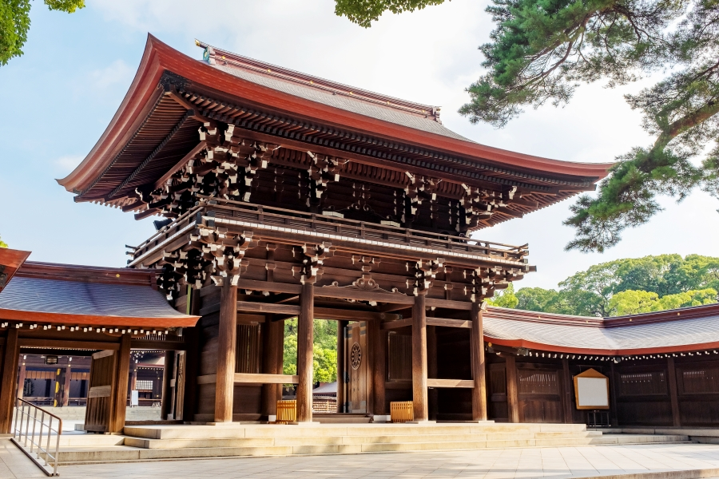

1 / 3

明治神宮
2 / 3

明治神宮
3 / 3
明治神宮
明治神宮是位於日本東京都澀谷區的神社，供奉明治天皇、昭憲皇太后的靈位。
日本的神宮主要是供奉皇室的祖先或是天皇，而明治神宮供奉的祭神就是明治天皇與昭憲皇太后。每年新年時節都會有大量民眾前來參拜，也是日本新人辦神前結婚儀式的熱門場所。此外，明治神宮有佔地70萬平方公尺的綠地，被稱作東京的都市綠洲，據說有近3000種的生物棲息於明治神宮的森林裡。
從原宿口悠閒地步行在南參道上，在抵達大鳥居前，兩旁的酒樽牆先映入眼簾。右手邊的清酒菰樽全來自各地要奉獻給神明的神饌，比較特別的是左手邊的酒樽牆陳列的竟然是洋酒桶！這是因為積極推動西化的明治天皇非常喜歡洋酒，為了討天皇的開心而擺放的。這種「和洋折衷」的酒樽牆是只有明治神宮才能看到的景象唷～
都來到神社了不去本殿參觀也說不過去吧！從第二鳥居前往本殿時，你會發現需要轉彎，和從鳥居到本殿為筆直道路的一般神社不一樣。其實這是刻意設計成88度的彎道，數字8是日本的幸運數字，也有結良緣的含義在裡面唷～
仔細觀察建築物的話，會發現很多處都有菊花圖案的標誌。「菊之御紋」通常用來代表日本皇室的家徽，通常為16瓣的花瓣，但明治神宮的花瓣則改為12辦，做出區別以表示敬重。
參拜前，別忘了先去「手水舎」淨身，神社參拜洗手步驟如下：
1. 右手拿勺子取水洗左手（記得不要把水倒完，勺子的水只能取一次！）
2. 將勺子換到左手來洗右手
3. 接著再將勺子換回右手，將水倒在左手掌中並漱口（水請吐在周圍的石頭上）
4. 再清洗一次左手
5. 將勺子垂直立起讓裡面的水可以清洗手柄，最後再將勺子放回原處